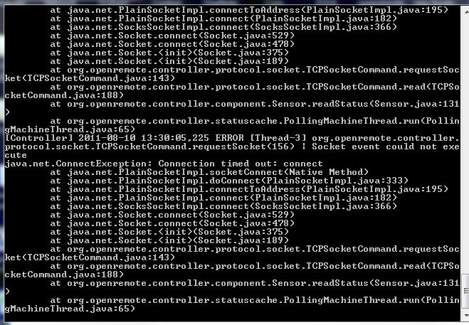

Hi,
Thank you for this wonderful project, I have been having a great time controlling my AV setup.
I am now stuck getting my X10 working.
I have succeeded in running a CM15 (via Mochad and TCP commands) all worked well except that I would like to remove the Linux box from the system.
Open remote controller is running on Windows 7
Now that I have replaced the CM15 with the CM12 (also connected to my Windows 7 OC) I can not get my x10 system to respond.
I have followed the setup guides (written for Openremote 1.0) and I expected these to be the same as Openremote 2.0
Example device command: (for in wall dimmer)
Protocol: X10
Address: c4
Command: on
Is this how it should be?
When using the CM15 with Mochad the command would be 'pl c4 on' sent over tcp.
I am reasonably sure I have set my com.port correctly in the config but all I get from the controller is 'error in controller'
I have come this far, I can't give up now!
I appreciate any help.
{kind=link}
|
 Here is what's happening with the controller if it helps. Everything else is working, I can control my x10 devices through Active Home on the same PC. The problem looks like the OpenRemote Controller talking to the CM12 (which I am told is the same as a CM11 but with Australin AC plug and USB to Serial connection) |
|
The error looks like you are using the Socket protocol at one point and the TCP connection fails. I am not familiar with X10 or the X10 implementation but do you have to access your X10 device via Socket (network connection) or via Serial? |
|
Hi Marcus, It does have a serial cable, just have to find the com port header from my last PC build (I didn't think I would ever need serial again) It would be really great if the Openremote Controller would talk to an X10 CM15. Thanks for taking the time to look. I will try the Serial connector when I get a chance. |
|
There's some X10 CM15 support through the mochad project but this is for Linux only. Nothing right now that would work on Windows directly. For CM15 on Linux, you can see here: OpenRemote 2.0 How To - X10 Devices |
|
Ok, just saw on your other post that you're already using mochad... |
|
Yeah, everything is running quite well with Mochad and the CM15, it's just that I am not a programmer so Linux is like mongrel demon spawn to me, haha. My next step is to consolidate mochad and the conroller onto the one box (running Ubuntu). I am pretty happy with the wat everything is running at the moment though. |